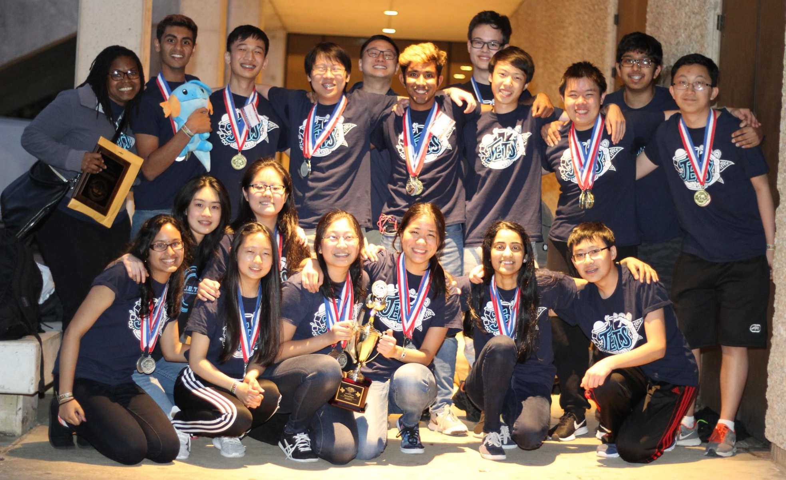
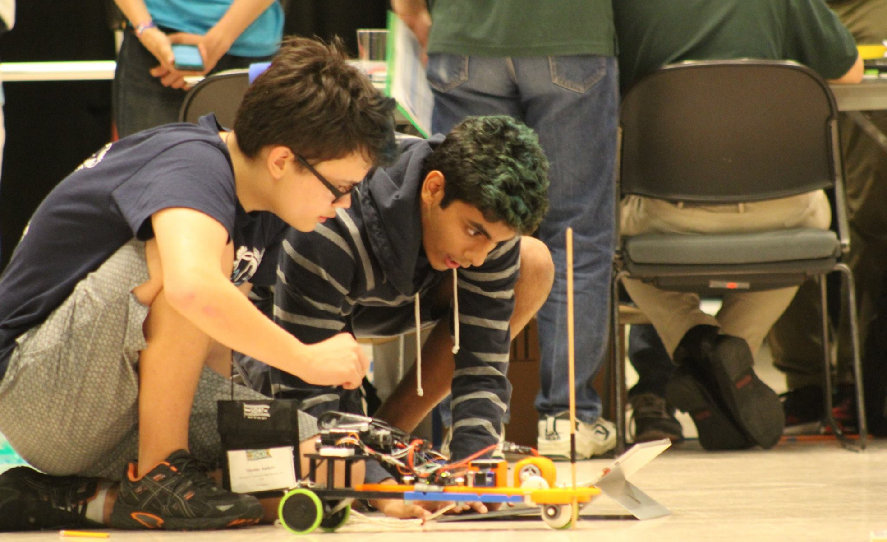

Science Olympiad

A quick intro to the Astronomy event: we want to develop students' understanding of astrophysical processes. The focus of the event varies on a yearly basis (e.g. supernovae, galaxies, exoplanets, etc.), but there are several common underlying themes (e.g. stellar evolution and classification, basic observational astronomy, and basic celestial mechanics). Competitors work in teams of two, and they are allowed notes of any kind, stored on a laptop or binder (but, of course, no internet access). Competitors are also expected to be familiar with about 15 pre-selected Deep Sky Objects which are related to the yearly focus.
I've been a competitor for 3 years and am now involved in supervising the event at the national level. Here are some of the resources I've developed over the years:
Why I'm doing this
Science Olympiad as a whole was an absolutely integral part of my time in high school. It was enriching academically, personally, and socially -- some of my best memories are of spending time with my teammates, whether it be solving hard engineering problems, discussing competitive strategies and meta-strategies, or goofing off.
My freshman year, I had swim practice after school; that effectively prevented me from seriously committing to any other afterschool activity, including Science Olympiad. My sophomore year, swim practice got moved to the morning, and I was able to join. The Science Olympiad team had made Nationals the previous year, and I wanted a part of that. Unfortunately, in my sophomore and junior years, our school was on the losing end of the "Texas bloodbath": a state tournament with three highly competitive teams, only two of which advance to nationals.
For the most part, I competed in engineering events; these involved designing and building devices that performed some desired task effectively and reliably. My senior year, I ended up having a change of pace. I picked up Astronomy, since a) one of our previous astronomy experts had graduated and needed a replacement, and b) I'd been interested in astronomy as a subject since childhood.
I acquired a digital copy of the classic textbook Introduction to Modern Astrophysics by Carroll and Ostlie and pored through it. In addition to astronomy, I learned a few things: 1) astronomy is not exactly what I'd imagined it was, 2) this is really damn cool, and 3) I'm actually REALLY into it. I'd always had a notion that most of astronomy was about finding and identifying objects in the sky; I was less familiar with the depth of the physics behind our modern understanding of astronomy. Being a physics buff, I found it invigorating.
My partner (who had more experience in the event) was absolutely crucial in guiding me in the right direction and offering useful competitive advice, as well as taking care of some of the celestial mechanics and other math that I wasn't so interested in. This combination of factors -- my interest and dedication, his guidance and experience, and surely a few moments of serendipity -- resulted in us placing 1st in the event at the state tournament. To add to my ecstasy, our team advanced to nationals, which would be my first time competing at that level. At nationals, my partner and I placed 2nd, which is a moment I'll always remember with great pride. Our team as a whole placed 6th overall -- the highest placement our school had ever achieved at nationals.
The weeks immediately following nationals were a euphoric blur. Nationals had been a sort of catharsis of 3 years of tension for our team, and as a senior I was finally able to indulge myself in true senioritis. I spent a good amount of that time reflecting. It seemed fitting that I'd come full circle: my first scientific love as a kid was astronomy, and here I was again, rediscovering that passion in a new context, in a new light. And, in all truth, it was only through a series of happy coincidences that I even ended up in the Astronomy event in the first place, which made it feel even more special.
I'd decided before nationals that I was going to get involved with Science Olympiad as an alumnus, helping to run the UT tournament in some way. In part due to my intrinsic interest, and in part due to my personal success at nationals, I ended up running the Astronomy event at UT invitational during my freshman year of college. Around the same time, I reached out to Donna Young, the national event supervisor for Astronomy. Her immediate friendliness and enthusiasm eventually led me to contribute to running Astronomy at the national level. Somewhere along the way, I decided to pick up an astronomy major, and maybe even study astrophysics in graduate school.
The point of this story is to illustrate how influential Science Olympiad has been to me -- not just in high school, but also far beyond. If you're currently a competitor reading this (not necessarily competing in Astronomy), here's the takeaway: work hard and take your efforts seriously, because they can end up shaping your life in ways you may not expect.